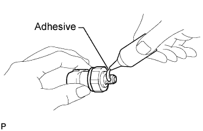
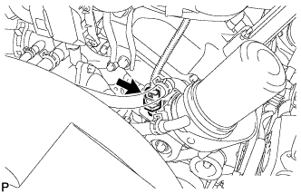
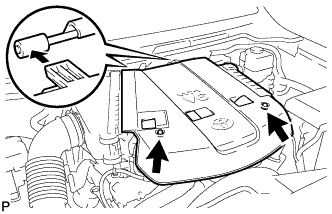

OIL PRESSURE SENSOR > INSTALLATION |
| 1. INSTALL OIL PRESSURE SENSOR |
 |
Apply adhesive to 2 or 3 threads of the oil pressure sensor.
 |
Using a 24 mm deep socket wrench, install the oil pressure sensor.
Connect the oil pressure sensor connector.
| 2. INSTALL V-BANK COVER |
 |
Install the V-bank cover with the 2 cap nuts.